Next: The Band Structure
Up: Physical Models employed in
Previous: The Quantum Effects
Contents
The purpose of GNU Archimedes is to solve the Boltzmann or the Wigner equation including the most accurate physical models, i.e. one of the following two equations (depending on including or not the quantum effects)
with
where
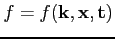
is the Boltzmann probability density function,
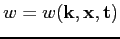
the Wigner probability density function, 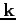
the particle pseudo-wave vector,
the position vector,  the immaginary unity,
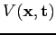
the classical electrostatic potential,
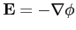
the classical electric field,
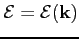
the energy band relation.
The operators
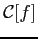
and
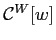
are the collision kernel for the Boltzmann and the Wigner equation respectively. Let us note that both the collision terms are numerically very difficult to simulate (as we will see in the mathematical expression of them) and it has a not very mathematically clear expression (at the present time) for the Wigner equation.
These equations have to be simulated in order to get accurate and predictive results.
the immaginary unity,
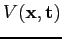
the classical electrostatic potential,
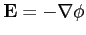
the classical electric field,
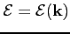
the energy band relation.
The operators
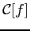
and
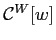
are the collision kernel for the Boltzmann and the Wigner equation respectively. Let us note that both the collision terms are numerically very difficult to simulate (as we will see in the mathematical expression of them) and it has a not very mathematically clear expression (at the present time) for the Wigner equation.
These equations have to be simulated in order to get accurate and predictive results.
In this section we report the basic models used in our simulations, in order to compute the solution of the two precedent equations.
For more informations about the precedent two equations, please refer to the following papers
- E.Wigner, "On the Quantum Correction For Thermodynamics Equilibrium", Physical Review, Vol.40, pp.749-759, 1932
- A.Bertoni, P.Bordone, R.Brunetti and C.Jacoboni, "The Wigner function for electron transport in mesoscopic systems", J.Phys.: Condens.Matter 11 (1999), pp.5999-6012
- E.Fatemi, F.Odeh, "Upwind finite difference solution of Boltzmann equation applied to electron transport in semiconductor devices", J.Comput.Phys. 108, (1993), pp.209-217
- A.Majorana, R.Pidatella, "A finite difference scheme solving the Boltzmann-Poisson system for semiconductor devices, J.Comput.Phys., 174 (2001) pp.649-668
Subsections
Next: The Band Structure
Up: Physical Models employed in
Previous: The Quantum Effects
Contents
Didier Link
2007-05-18